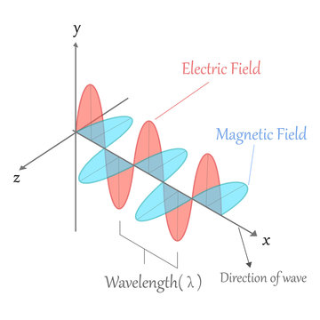

Problem 1
Charged Particle Motion in Electric and Magnetic Fields: Applications and Simulation
1. Applications of the Lorentz Force
The Lorentz force governs the motion of charged particles in electric and magnetic fields:
\[
\vec{F} = q (\vec{E} + \vec{v} \times \vec{B})
\]
Where:
- \(\vec{F}\): Force on the particle
- \(q\): Charge of the particle
- \(\vec{E}\): Electric field
- \(\vec{B}\): Magnetic field
- \(\vec{v}\): Velocity of the particle
Real-World Applications
- Cyclotrons and Synchrotrons: Use magnetic fields to bend particle paths into circular orbits; electric fields accelerate particles.
- Mass Spectrometers: Separate ions based on mass-to-charge ratio via Lorentz deflection.
- Plasma Confinement (Tokamaks): Magnetic fields trap and guide high-energy plasma in fusion research.
- Cathode Ray Tubes: Use deflection plates and magnetic coils to control electron beams.
2. Simulating Particle Motion
The motion is described by Newton’s second law under Lorentz force:
\[
m \frac{d\vec{v}}{dt} = q (\vec{E} + \vec{v} \times \vec{B})
\]
\[
\frac{d\vec{r}}{dt} = \vec{v}
\]
These coupled differential equations can be solved numerically.
Case A: Uniform Magnetic Field (\(\vec{B} \ne 0, \vec{E} = 0\))
- Motion is circular or helical.
- Radius of motion (Larmor radius):
\[
r_L = \frac{mv_\perp}{|qB|}
\]
- Cyclotron frequency:
\[
\omega_c = \frac{|q|B}{m}
\]
Case B: Uniform Electric + Magnetic Fields (\(\vec{E} \ne 0, \vec{B} \ne 0\))
- Results in helical drift.
- Drift velocity:
\[
\vec{v}_d = \frac{\vec{E} \times \vec{B}}{B^2}
\]
Case C: Crossed Fields (\(\vec{E} \perp \vec{B}\))
- Uniform drift perpendicular to both fields.
- Can produce circular, spiral, or linear paths depending on initial velocity and configuration.
3. Parameter Exploration
You can analyze how various parameters affect motion:
| Parameter | Effect |
|---|---|
| Magnetic field strength \(B\) | Increases curvature of trajectory |
| Electric field \(E\) | Adds linear drift or acceleration |
| Initial velocity \(\vec{v}_0\) | Affects radius and pitch of helical path |
| Charge \(q\) | Changes direction and magnitude of force |
| Mass \(m\) | Modulates inertia and frequency of gyration |
The simulation allows users to vary:
- \(B\), \(E\)
- \(\vec{v}_0\)
- \(q\), \(m\)
And observe the resulting 2D and 3D trajectories.

4. Visualization Techniques
Visualizations help interpret physical phenomena:
- 2D XY plots: Show circular motion in a plane perpendicular to \(\vec{B}\)
- 3D helical paths: Reveal combined effects of \(\vec{v}_\parallel\) and \(\vec{v}_\perp\)
- Time-colored plots: Encode time using color gradients
- Vector field overlays: Illustrate direction of \(\vec{E}\), \(\vec{B}\), and force
Highlighting Key Effects
- Larmor radius is visibly smaller with stronger \(B\)
- Drift velocity is observed as net motion in crossed-field simulations
5. Relevance to Practical Systems
Cyclotrons
- Utilize circular motion induced by magnetic fields for particle acceleration.
- Electric fields increase speed at each pass.
Magnetic Traps
- Confine plasma using spiral motion within magnetic bottles.
- Core to nuclear fusion research.
Electron Beams in CRTs or SEMs
- Deflected via crossed electric and magnetic fields for imaging and targeting.
6. Limitations and Extensions
Limitations
- Assumes constant fields
- Neglects relativistic effects
- Assumes no collisions or resistance
Potential Extensions
- Add non-uniform or time-varying fields
- Incorporate relativistic mass changes
- Model multiple interacting particles
- Use adaptive time-stepping for high-energy paths